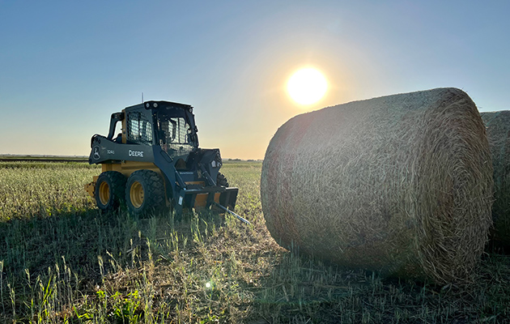

Contact Us
Thank you for visiting our website. If you have questions, please email us at media@caseyfarms.us.
Really Simple Syndication (RSS) and a feed reader allows you to subscribe to our blog. On your mobile device, download and install a feed reader. Then follow our feed. RSS Feed: caseyfarms.us/rss.xml

Our Mission
At our farm, our mission is centered on three core values:
Being a Good Steward of the Land: We are committed to the sustainable management of our agricultural resources. Our practices are designed to maintain and enhance the natural environment, ensuring the land remains fertile for future generations.
Strong Partner in Agriculture: We actively collaborate with other farmers, agricultural businesses, and research institutions to advance the industry. Through partnerships, we share knowledge, resources, and innovations to improve farming practices across the board.
Supportive of Our Local Communities: We believe in giving back to the communities where we operate. From supporting local events to engaging in community service, we strive to strengthen our social bonds and contribute to the well-being of our neighbors.
Sustainable Farming and Ranching
No-Till and Minimum-Till Practices: These methods not only benefit soil health but also reduce habitat disruption, allowing wildlife to co-exist with our agricultural activities.
Diverse Crop Rotation: By varying our crops, we create a mosaic of habitats that support a variety of wildlife species throughout the year.
Water Management: Our approach to water conservation also benefits wildlife by maintaining wetlands and water sources essential for their survival.
Common Sense Approach: We understand that conservation involves balancing human needs with those of the environment. Our practices aim to ensure that while we farm, we also leave enough for nature, preserving the ecological balance.
Legacy for Future Generations: Our vision extends beyond our immediate impact. We work to secure a future where wildlife can continue to flourish, offering opportunities for hunting, wildlife observation, and a connection with nature. This commitment is not just about the present but is a pledge to maintain the natural heritage for future generations.
Wildlife Conservation
Casey Farms believes in a harmonious coexistence between agriculture and wildlife. Our dedication to conservation is multifaceted:
Advocacy for Wildlife: We actively work to enhance habitats for species such as pheasants, quail, turkey, and deer. By improving cover and food sources, we help these species thrive in an agricultural landscape.
Protected Areas: We post our property and designate specific areas as protected zones. These sanctuaries are free from human activities that could disrupt wildlife, providing safe havens where animals can breed, feed, and rest without disturbance.